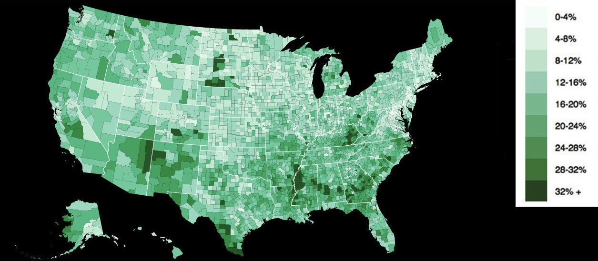
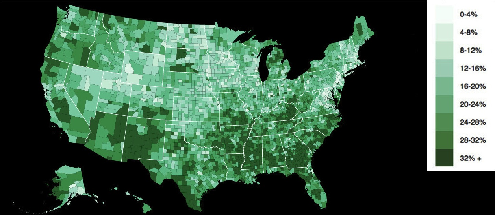
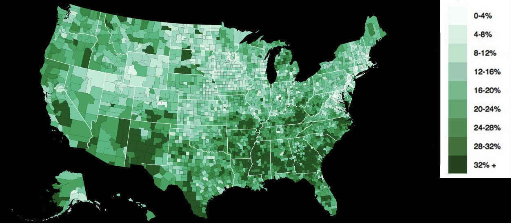

I recently found this interesting dataset of Small Area Income and Poverty Estimates. It contains several variables concerning poverty rates across different counties in the United States. The ones I will focus on for this post are the percentage of people of all ages living in poverty, the percentage of individuals under 18 living in poverty, and the percentage of related children age 5-17 (school age) in families in poverty in 2012, which is the most recent year available.
I wanted to take a look at how poverty rates differ across these age groups in various counties and I thought using choropleths might be a good way to visualize those differences. (I found out after writing this that they actually do have choropleths on the census.gov website, but they took a different approach to theirs - they are in different color schemes with different quantize scales across age group and are each on a separate page. When doing this, I opted to look at the different age groups in the same color scheme, with the same quantize scale, next to one another, as I wanted to compare the groups.)
I am going to use this choropleth designed by Mike Bostock, which I really liked for this purpose. I’m just going to make a few small modifications – swapping out the blue and green values in the color scheme (just for experimentation’s sake) and adding a black background since some of the lower values in this particular dataset end up getting washed out in the white, especially around the coastal areas. Oh, and clearly the data I use will be different!
The dataset also gave the national rate and the 90% confidence interval, so I’ll pass that along here.
Percentage of people in poverty, all ages: National rate: 15.9%; 90% confidence interval: 15.8%-16%

Percentage of children under age 18 in poverty: National rate: 22.6%; 90% confidence interval: 22.4% - 22.8%

Percentage of related children 5-17 years old in families in poverty: National rate: 21%; 90% confidence interval: 20.8% - 21.2%

My first impression is that the rates look higher in the graphs containing the minors. It looks to me like there are more dark patches in those maps, particularly the under-18 one. I couldn’t really say anything conclusively yet so I decided to do some really simple statistics to see if my impression of an overall increase in poverty rates for younger populations according to this data might be correct.
First I got a mean and standard deviation, and ran a Shapiro-Wilk test to see if the data was normally distributed. The stats.shapiro command in SciPy returns a test statistic followed by a p-value.
import scipy as sp
from scipy import stats
import numpy as np
import pandas as pd
from pandas import read_csv
pov = read_csv("poverty_comparison.csv")
#these are these arrays from the csv corresponding to each group,
#in order of county id
pov18 = pov["pov18"]
pov517 = pov["pov517"]
povall = pov["povall"]
print "under 18:"
print "mean:"
print np.mean(pov18)
print "standard deviation:"
print np.std(pov18)
print "shapiro-wilk:"
print stats.shapiro(pov18)
print "5-17"
print "mean:"
print np.mean(pov517)
print "standard deviation:"
print np.std(pov517)
print "shapiro-wilk:"
print stats.shapiro(pov517)
print "all ages:"
print "mean:"
print np.mean(povall)
print "standard deviation:"
print np.std(povall)
print "shapiro-wilk:"
print stats.shapiro(povall)
That code returned the following (plus some white space for clarity):
under 18:
mean:
24.4720325712
standard deviation:
9.16095304016
shapiro-wilk:
(0.9813428521156311, 4.322406441501704e-20)
5-17 in fam:
mean:
22.5717507047
standard deviation:
8.89065270826
shapiro-wilk:
(0.9775098562240601, 4.492177891111914e-22)
all ages:
mean:
17.1698089571
standard deviation:
6.53900364074
shapiro-wilk:
(0.9511524438858032, 2.216994805890953e-31)
You can see that these groups are not normally distributed (I also tried with log transforms of the data – still not normal).
So I just used the Wilcoxon signed-rank test, which is a nonparametric paired difference test, to look at the differences between the samples. The code:
print "wilcoxon: under18 and 5-17:"
print stats.wilcoxon(pov18,pov517)
print "wilcoxon: under18 and all ages:"
print stats.wilcoxon(pov18,povall)
print "wilcoxon: 5-17 and all ages:"
print stats.wilcoxon(povall,pov517)
Returned the following:
wilcoxon: under18 and 5-17:
(33434.5, 0.0)
wilcoxon: under18 and all ages:
(30549.5, 0.0)
wilcoxon: 5-17 and all ages:
(81849.0, 0.0)
Looks like my impression generated from the graphs were overall on the right track. According to this test, the overall poverty rates for individuals under 18 are significantly higher than both the all-ages group and the related 5-17-year-olds in families in poverty group, and the 5-17 group has significantly higher rates than the all-ages group.
Of course, this test does not differentially weight the different population sizes of the different counties, so that’s a disadvantage of my very basic approach here. Also, since the groups are overlapping, I think it would have been a good idea to compare the non-overlapping proportions of the groups, but I do not presently have those numbers. It would be interesting to see a plot of p-values when comparing two of the groups. Unfortunately, as I do not know how the data is distributed within the individual county groups I don't know what tests I should run. If anyone has an idea for how to work around this, I'm open to recommendations. I'd be interested to create a p-values choropleth in the future. I also know there are certain disadvantages to using choropleths in general, such as the amount of space a certain area has to represent it being governed by geographical rather than population size. However, I think that the choropleth in this case does convey the right general impression, which is that minors were disproportionately affected by poverty in America in 2012 according to this data.